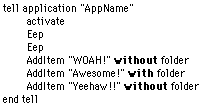

Making an Application Recordable
By Dan Vanderkam
Last Month (if you let month be a very loose term...) we learned how to make an application accept AppleScript commands. However, there's another aspect to cover—making your applications recordable.
What does this mean? Essentially, it means that the Script Editor program will write down commands when the user performs actions in your program. This is very, very useful for people who don't know much AppleScript. And if you aren't interested in making your application recordable, you should still read on. If you don't follow some of the steps here (the part about an aedt resource), your scripts will come out as a garbled mess once you look at them again.
Lets use the same project we were working with last time. It already accepts Apple Events, and it has an aete resource all worked out. If we want it to be recordable though, we'll need to give it an interface. So, open up last month's project and add controls to make the main window look like this:
The listbox's name is ListBox1. The buttons are BtnClear, BtnAdd, and BtnEep. Just call the checkbox checkbox1 and the editfield Editfield1 for now.
Next off, we need to add code for these buttons.
Open up the code editor for BtnEep. If you remember, the EEEP event made the computer beep three times in a row. So, should the code just be three "beep" commands? Well, it could. But that would destroy the whole purpose of this article. In order for a program to be recordable, it must perform actions by sending Apple Events to itself. To do this, we'll need to create a new AppleEvent object. Here's the code. I'll explain in a minute:
The first line is simple. AppleEvent is a data type. The next line isn't so simple. This line uses NewAppleEvent to change a from nil to something useful. Just like NewPicture does to picture objects. The three parameters might look familiar. "MYaa" is the class that we gave to the Eep event, and EEEP is the ID. The final parameter is the creator code of the application that it will be sent to. Why blank? This tells RB that we want to send the AE to ourselves.
To send the apple event, we use its Send method. This returns a boolean. False if it failed, true if it worked. If it didn't work, the computer beeps.
When our app object receives the event, it does the correct action. This may seem like a roundabout way of doing things, but it works.
Now for the Add button. Here's the code for that:
The first two and last three lines should be familiar. DISP is the addItem event's ID. What are the middle two lines though? If you remember, AddItem took two parameters. "fold" was a boolean parameter that determined if the item to add was a folder or not. "----" (the direct object) was a string that contained the name of the item to add. the BooleanParam and StringParam methods of the AppleEvent object allow us to access these properties, which is exactly what we have done.
Finally, just put ListBox1.DeleteAllRows in the Clear button. This isn't a method that our scripts use, so it doesn't need to be sent as an Apple Event.
Next, build the application and be sure to include our aete resource in it.
The aete resource is fine—it doesn't need to be modified to be recordable. Just make sure that the event IDs and classes are exactly right (MYaa for all the classes and EEEP, DISP and GNUM for the IDs). To make the application recordable, we need to add an aedt resource.
Just another four letter acronym? Certainly! It stands for Apple Event Dispatch Table. In this case, we'll need two of these resources—one for each suite.
First of all, create an 'aedt' resource with an ID of 128. This will be for the Required Suite. If you don't feel like typing all this in, just take it out of any recordable program. It'll be the same thing. If you want to type it in though, add four items and set their data to this:
What does all of this mean? There's one entry for each of the four items in the required suite. They are: Open application, Open Document, Print Document, and Quit. An RB program automatically understands the first and last ones, so we might as well add them. I'm not 100% sure about what the Internal Code field is for. However, just start at 1001 in the first resource (this one) and 2001 in the next. This is how most applications do it, and it works fine.
Now we need to add another aedt for our own Suite. Add aedt ID 129 and set it to this:
If you remember, the class of all our events was "MYaa". The IDs are just the IDs that we gave to the events in our code. Finally, the codes are in a pattern that follows what we should try to make them.
Now, close the application and save it. If you did everything right, your program should be recordable!
To test this, run the program and open up the script editor. Click the Record button and switch back to our application. Then, go wild! Finally, switch back to the script editor and press stop. Depending on how wild you went, you'll see something like this:

Now you can make your programs recordable, and your users will be just that much happier with you!